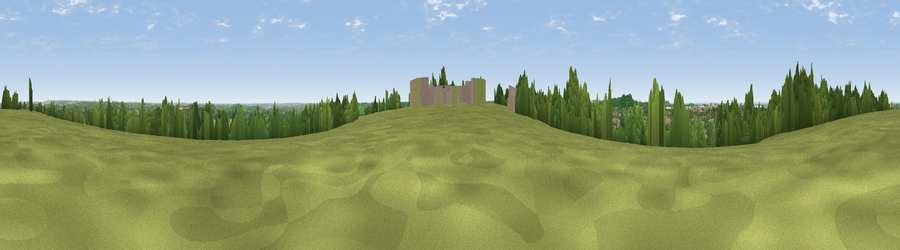

Viewpoint near Daventry
#24257 in England · top 23% of its area beats it · near DaventryWhere it is
The exact computed spot (SP 58775 62475). Click the marker for map links.
The view, rendered

A 360° render of this exact spot computed from the terrain model, tree cover and land cover — summer colours, afternoon light, calibrated against photographs of famous viewpoints. Real trees, hedges and buildings will differ in detail.
The panorama
Grey silhouette: terrain skyline in each direction (720 bearings, Earth curvature and refraction included). Dashed green: skyline with trees (+15 m) and buildings (+8 m) as obstacles. Blue strip: how far the ground is visible on each bearing.
Where the view opens
Wedge length = distance to the farthest visible ground on that bearing (vegetation-aware). Rings at 10, 25 and 50 km.
What fills the view
45% grassland · 21% cropland · 18% woodland · 15% built-up
Angular shares of the visible panorama (visual magnitude), not map area. Landscape diversity 0.57 (0–1 Shannon).
Key numbers
More beautiful places nearby
The staircase of upgrades: each row has a higher view potential than everything closer. Driving times are estimates from straight-line distance, calibrated against real road routing — check an actual route before setting out.
| Place | Direction | Drive | Score |
|---|---|---|---|
| Viewpoint near Norton | N · 1 km | ~2 min | 52.0 |
| Viewpoint near Staverton | WSW · 4 km | ~9 min | 54.0 |
| Big Hill - Staverton Clump | WSW · 4 km | ~9 min | 68.4 |
| Viewpoint near Northend | WSW · 22 km | ~36 min | 69.7 |
| Viewpoint near Northend | WSW · 22 km | ~36 min | 70.3 |
| Viewpoint near Radway | WSW · 25 km | ~40 min | 71.7 |
| Viewpoint near Ilmington | WSW · 43 km | ~63 min | 72.6 |
| Viewpoint near Meon Vale | WSW · 44 km | ~65 min | 77.0 |
52.25731, -1.14034 · source: screening · position refined by local search. Computed location — check access rights before visiting.